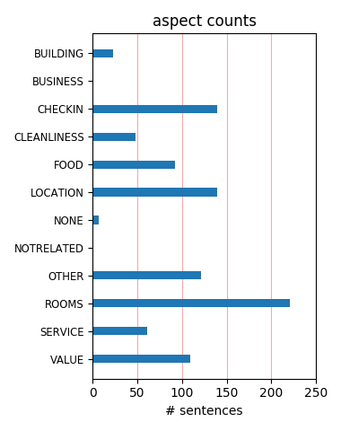
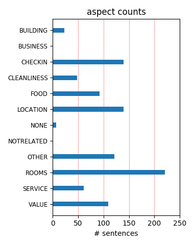

It's a bit scruffy, very noisy (outside), and best of all it's not even in Wembley. It's located right on the busy North Circ road between Wembley and Hangar Lane, a 10 minute walk from Stonebridge Park tube station on the Bakerloo line.
The hotel was clean and the staff friendly. The North Circular was noisy and the factories opposite smelly but what more do you want for a nights sleep than a clean comfortable bed? We ate breakfast at the Ace Cafe just down the road so a satisfactory visit.
Had no problems with the hotel. Staff were polite and very helpful! Room was clean, was standard room which is what you pay for! Only concern I had was the car park didnt look secure enough. Luckilt I didnt drive. So only advice would be dont drive if it can be avoided!
i wouldn.t reccomend parking outside this hotel.there were 3 cars broken into the 1 hight we stayed there .including ours .when i asker for a vacuum cleaner to clean up the glass i was given a brush and shovel.then they had the nerve to tell me they have a lot of cars broken into .
I have stayed at Travelodges around the country before but this one was absolutely awful. The chairs in the "restaurant" were filthy. The staff were impolite, unhelpful and unresponsive. The bed linen was not changed once in our week stay. Would never stay in a Travelodge again, sticking to PremierInn in future.
The outstanding manager, Deepak, is really up against it in trying to keep this hotel running. They've been promised inward investment from Travelodge HQ in anticipation of 2012, but the upshot of that is that until then it is going to remain a noisy, dirty, ill-equipped hotel in a rough location (15 minute walk to Stonebridge Park Tube Station).
We enjoyed our stay at Wembley. Any problems we had were soon sorted out by friendly staff on reception who made us feel very welcome. Easy access to public transport into the City. Good car parking and easy to find as close to North Cicular. Will use again when we visit London as much cheaper than Central London hotels and no hassle of finding parking spaces etc.
This hotel is filthy and smelly, the staff are rude and not very helpful. We booked for three nights and only stayed one, nobody slept the night we were there and none of us were brave enough to get into the beds. the showers have mould growing up the tiles you feel dirtier when you get out of it than what you did going in, my advise is to avoid this hotel like the plaque.
OK, it's a Travelodge so you get what you pay for. Room was OK once we moved to a room at the back. The front of the hotel faces the North Circular! The breakfast was fine and the staff were helpful. Car parking was easy to organise. We used it as a base to visit various places in London using Oyster so the bus stop right outside was useful - two stops to Stonebridge Park tube.
Don't waste your money on this one where do I start!!! constant noise all night long from traffic light fittings falling off bedside lamps insufficient towels, cups, pillows as it was double occupancy kettle hazardous didnt even swich itself off bed well you could feel every single spring bathroom dirty and they had the cheek to charge extra £4 as booked room on the same day as stay
Ok, it was cheap but by that I only mean that it didn't cost a great deal. I could rent you my tent for £50 per night and that wouldnt be cheap! The door to the room looked like it had been kicked in at least once, the mattress had been stolen and replaced with a sheet of plywood covered in a white sheet and there were unknown fluids sprayed across the ceiling which looked suspiciously like blood.
Stayed 13th to 15th March on a nine pound a night deal. Checkin very efficient. Room clean but very, very noisy problem solved when we bought ear plugs ( £1.69 boots). Breakfast good value cause kids eat free. Walk to station takes 10 minutes and area fine to walk through in day time don't understand what other reviews are on about, however like many areas in the UK wouldn't walk around after dark.
I stayed at this hotel recently out of desperation, all other hotels were fully booked. The hotel was dirty, the shower smelt of sewage, the wallpaper and fixings were ripped and the atmosphere stunk food from the nearby catering/food processing businesses. The ONLY thing I enjoyed was the bed- I slept in it like a baby (quite unusual for me to enjoy a hotel bed). I am afraid can not recommend this hotel.
GOOD SERVICE - but when you leave something behind that is expensive you need to call them so many times before they respond, i am still waiting. The call centre that use to make bookings is absolutely rubbish. It cost me a lot of money to make a booking - something else I am waiting for a feedback on. The service is good but you have to pay for car park at the hotel that should be abolished for hotel guests.
This hotel is the worst hotel I have ever stayed in. Unhelpful staff, Broken lift, Hot and Smelly rooms. The room had broken skirting boards and peeling paint. Window could barely be opened but even when closed Traffic noise was terrible. Even the TV had no remote control. Bathroom was unclean with built up limescale on shower door tracks Breakfast provision is pathetic you would be better off going to McDonalds.
We are Travelodge regulars , but this really was the pits! We chose because we knew we could park for free on the road outside. The room was well worn, the sofabed was blackened with dirt, dust layered up down the sides of the mattress. Yes it was a bargain price but this place really let's Travelodge down. As for the food !! We knew it wouldn't be great but it was dry and old looking our nachos looked like they been picked up off a floor.
I have used is hotel three or so times now, and have found it to be exactly what I would expect from travelodge. Travelodge is all about value and it is defiantly that! the website warns about road, which yes is not quiet, but because of that road makes the hotel very easy to find and accessible. Not sure what everyone else is complaining about, if you want the Hilton you need to be willing to spend the Hilton prices. Thank you again travelodge
Stayed at the Wembley Travelodge for 3 nights. The price was very reasonable for 3 people sharing. The staff were friendly and helpful. The room was very clean and the towels were replaced each day. Not a great place to eat. Also a bit out of the way as regards shops restaurants etc. About 10 min walk to either of a choice of 2 tube stations. All in all we got exactly as we expected and for value I would definitely recommend this place. Don't expect luxury though.
Can't say anything nice about my recent experience staying here. The rooms are in bad repair and have had nothing spent on repair since Travelodge took the building over from Holiday Inn Express. Rooms are dirty, holes in walls, fixtures hanging off walks. TVA without remote controls. Dare I go on? I can talk in the plural as several of my colleagues stayed here and had the same experience. Come on Travelodge. Do something about the premises or do you just not care?
I stayed at the Wembley Travelodge for an event at Wembley Stadium. The hotel was extremley hot and smelt. The windows barely open and there meant an uncomfortable nights sleep. When we came to leave in the morning my car had been broken into. The staff were very rude and one said she didn't understand why I was so upset about it! Apparently at least 2 cars a night get broke into, so this was just the norm for the staff. I would NEVER stay in this hotel again! Awful.
This place was terrible,On the busy north circular the window did not shut properly the catch was broken so noise level was awful.Opposite a noisy food factory we didnt have a plug for the sink the plastic skirting board was broken exposing sharp edges.The breakfast was very poor little choice of low quality products we tried some food from the bar menu awful.The fridges in the bar dont work so warm bottles yuk there was also feet missing off both beds .Absolute dump never again.
Stayed here as it said it was a short walk to Wembley stadium. Lie! Rooms smelt of full vacum cleaner bags. Not enough bedlinen,no loo roll. Lots of flies in reception and bar area. My car was broken into in the night along with another. CCTV was conveniently not working either. Nobody came & told me about this even though they knew it had happened & what room I was in. The staff were very unhelpful when I asked for a brush and dustpan to clear the glass from inside. Avoid Avoid !!
we stayed at the travel lodge in wembley for a show at the wembley arena, the hotel was nice and the staff were friendly, the hotel is located on a very busy road however the hotel has double glazing and it's pretty quiet inside. It's quite a walk to stonbridge park underground station but any fit healthy person can do it with no problem from there there are trains that go to wembley central and from there again its quite a walk to the arena but for £26 a room its great value and a good location!
Arriving tired at midnight after a lovely London show, If we hadn't been tired and incapable of driving 120 miles home we would have left. As soon as we walked in the door, the carpet was heavily stained. The bed looked grubby, pulled back duvet, the sheet was stained so we slept in our clothes on top of the bed, couldn't bear to get in. No tea bags, coffee, sugar, toilet paper or plug for sink. It looked as if the last occupant had left just 5 minutes before us. No one at desk to report any of this too.
I've staying in loads of Travelodges and have always found them clean, modern with all the basics I need. Some are better than higher brand hotels. This one is like an old converted office block. Stains on the carpets, graffiti in the lift. Railing around like a prison. VERY VERY loud traffic noise 24 hours beacuse all the seels on windows are worn. I asked for an additional pillow at 5pm (there were 2 in the room) - was told "Too late - I work on reception - do i look like someone who cleans rooms" I would never stay here again.
I nearly did not stop having read a few reports by as it was just down the road from my course so I took a chance. Reception staff were polite and helpful. Carpets in corridor need to be restreched. The main areas are in need of a lick of paint and look tired. The room was clean and tidy the bed comfortable, the light in the shower did not work. I had breakfast on the two mornings I was there , good selection of food spoilt by the fact the eggs and beans were tepid even at 7am. Come on travel lodge give it a lick of paint and stop putting customers off
Can't complain when you are paying less than twenty pound a night in London. But if you were paying more you would certainly expect: A more comfortable bed, a shower that sprayed water where you wanted it, a lift that worked, a fresh lick of paint on the walls and the carpets to have been cleaned this side of the millennium! Our room did have a brilliant view of Wembley stadium however the visit of a 'ghost' wanting to change the bedding at 3am was not what we expected. So it wasn't just the uncomfortable bed that spoilt the nights sleep. If you are in room 714, watch out for her!
Despite what I read in most reviews here, I can defiintly say that our 2day stay in this travelodge was Good Value For Money... we only paid 79gbp for 2 nights and an extra approx 7gbp for breakfast which was quiet vast and worth it. Ample of safe parking spaces could easily be spotted from room window, and paid 5gbp per day. About 10min walk from Hanger's lane station. Staff is great and also are the prices at the bar. Could be quiet noisy after 6am since it is situated in an industrial area and a few meters from the motorway. Highly reccomended for short stays and a low budget stay.
Okay. So me and my partner stopped at this travellodge for FOUR nights in jan 2010. Good points. You get what you pay for. Fast internet connection. Bad points. Smeared blood on the wall near the stairway. Someone had cut their hand and dripped it down the wall. Didnt look great on a cream wall. Being woken up at 2am by the fire alarm. My car getting broken into. Toilet leaked, Shower leaked. Light switch hanging off the wall. The smell of cannabis although its a non-smoking hotel. Might just be room 123. But for me, four nights is enough. Go there at your own risk. For me, never again.
I booked this hotel through work as we had a early morning conference. The rooms were terrible, stains in bathrooms, no plugs (for the men to shave in the morning) and a drainage problem in the shower. The food was fried to death and the batter was a dark brown. The hotel was dirty. I can honestly say the place needs to be shut down. I made a big mistake of looking through the kitchen window.. big mistake. The next day I had really bad stomach spasms. Im sure it was due to the disgusting state of the hotel. I took photographic evidence and will be taking this further.... DONT STAY HERE!
We stayed here on the 28th/29th November - our car and 14 others were broken into in the Travelodge carpark. During our stay the pedestrian access gate was broken - the intercom was not working - the gate was just left open. This 'open' gate gives access to anyone who wishes to enter the grounds of the hotel and the car park, at anytime of the day or night. I contacted Travelodge, after I became very alarmed after talking to staff at the hotel - this is a problem that is happening very, very frequently - if you can avoid it please, please don't take your car and park it in this car park.
On arrival the staff we pleasant and helpful checking you in quickly and easily I agree the hotel is dated and could do with modification but is clean, little things bring it down like the carpet in the halls and generally creeks and groans of an old building but a pleasant night sleep on a comfy bed, car park was safe a group of us went with 5 cars and the hotel was busy but no reports of break ins other than being old and dated a perfect place to stay for a night when going to Wembley stadium don't worry about some of the reviews you will find it fine. Wouldn't recommend the breakfast though
Stayed one night for the England V Egypt game. arrived after a 10 min walk from stonebridge park station to a long queue at reception. When checking in was quitely told a little about the hotel. The room was at the back of the hotel so no noise from the busy main road although the room was big enough only one pillow each was suppiled and one was waffer thin. The location of this hotel is poor, busy main road and unwelcoming surrounding areas, took 40 mins to walk to Wembley Stadium. Wouldn't recommend this hotel for people visiting Wemblley Stadium the Ibis Hotel is next to Wembley Stadium and was cheaper.
Stayed here for a single Saturday night. Arrived at 11am so could not check in but parked car (£5 for 24 hours - lots of free on street parking) . Returned to check-in at 2am fearing the worst but the 2 rooms we'd booked were OK (202 and 203). Their was a mark on the wall in one and missing plug in the other but nothing too bad and for £25 a room per night it was a bargain! A couple of bits of litter by the lifts seemed sloppy on the part of hotel staff. Stonebridge Park station is a 10 minute walk, on route you pass the Ace Cafe which is worth a visit. I would ask for a room on the back due to traffic noise.
We stayed at the Travelodge Wembley for 2 nights because of the cheap deal they had(£23.50 per night per room) and its close location to the city attractions. The hotel was clean, roomy, staff friendly and helpful, tea & coffee making facilities and a food available in the lobby. We chose to eat at a local Indian just up the road towards Hanger Lane tube - it was fantastic food the best Indian I have ever had in fact. The only drawback of the hotel was the noise at night - the hotel is on the North Circular and in an industrial area. I would recommend you keep the window closed at night, so in the summer I would suppose that no sleep would be gained.
We stayed here on a £19 Travelodge special offer and were very impressed with the room and the value. We asked for a room at the rear of the building on a high floor and noticed very little road noise. We did not use the restaurant, but took oiur own breakfast. At £5 a day the parking was excellent value for London. We used the hotel as a base for visiting central London. It was an easy 15 minute walk from Hangar Lane Station and the same distance from the number 18 bus (from the Harrow Road near Stonebridge Park) which goes all the way to Baker Street and to Euston. The room was recently decorated, the shower was great and the staff were polite and helpful. We will use this hotel again.
i booked this hotel on friday to stay saturday has couldn't find anywhere to stay, i was worried as to what it would be like after reading really bad reviews. our room was a double room on the ground floor. room was clean, bathroom clean shower was just right for 1 night it was ok just somewhere to sleep. didn't find the room that noisy even though we were on the front by the duel carriage way think it was triple glazed. we never ate in the hotel so cannot comment on the food, only met 1 member of staff who was pleasent enough.taxi from here to wembley stadium costs £8 and can be called direct from the hotel. I think this hotel was overpriced for the facilities there,i paid £129 for a double room.
The first room I was given had a completely flooded bathroom floor, like a paddling pool, from a leak behind the tiles. It took a very long time for reception to process a new room, by which time I was late for an appointment and had to leave without seeing the room. When I returned at approximately 1am my replacement room stank of damp and mould, it smelled like a tom cat. The windows didn't open and the air quality was awful. They had left the extractor on in the bathroom so they certainly knew it smelled terrible. I cannot believe that they would be prepared to put people in rooms like this. This hotel is disgusting and I have never seen a Travelodge like it, having stayed in many. It was utterly revolting.
Not a bad hotel for the money, but when we went to breakfast, we daftly thought it would be safe to leave our bags and wallets in the room. BIG MISTAKE, after 40 minutes at breakfast we returned to find two ten pound notes gone from my wallet and ten from my wife! Lad at front desk had asked us for our room number 3 times at breakfast despite it being on the breakfast voucher...suspicious! Same lad was no help and claimed no one but us could get in the room, not even staff!!! Eventually rang police. Then suddenly the manager appeared and started using some machine to read our door. Sadly this machine couldn't be downloaded by anyone on duty at the time. Convenient! Absolutely convinced the staff are responsible. Disgrace
"It was filthy, smelly and generally disgusting. There was what looked like vomit on the carpet of the first floor outside the lifts, and the corridor smelled awful. In my room, the light above the shower didn't work, the bedside light didn't even have a bulb in it - and needless to say the switch couldn't be reached from the bed anyway. The vending machines in reception didn't work. Waiting times to be seen at reception were awful. In the morning one of the lifts was out of order, and the stairs were dark and dank and dirty. I won't ever stay there again, and my faith in Travelodge as a chain has taken a serious hit. I won't be staying in a Travelodge again unless I've run out of all other options (including a tent!). "
This place may well be cheap but it is far from cheerful. Set in an industrial area it is uninviting and with a little rain at midnight it wouldn't look out of place in Blade Runner. The staff were surly, the reception miserable and dirty, the whole place had a funny smell to it (more later) and it was far too warm and sticky. The room was large, the bedding clean, the carpet, walls and furniture dirty, the sofa bed a junk shop throw out. There was no air con, the room was too hot, the windows opened onto a seedy industrial area with a number of factories producing foul smelling food (hence the funny smell). The tube station is an unpleasant half hour walk along dirty streets and through smelly subways. Do yourself a favour, spend a little more and stay elsewhere.
The building really needs updating - grubby paintwork and carpets held together with duct tape are a few examples of what we found. One of the bathroom doors had holes in - appeared to have been caused deliberately. Only one lift worked for our 3 night stay and most vending machines were out of order. The restaurant area should be kept cleaner - tables not tidied or wiped clean - food was very bland as well. We would have left on our first night but all local hotels were fully booked - we tried raising concerns with staff who explained they had raised concerns re renovation with Head Office but to no avail. Not what we expected - not a place for families - very disappointing! p.s. our kids saw rats in the car park - running from hotel - good decision on their part!
I don't know where to begin with this hotel. It must be one of the worst places I have ever experienced. It pulls down the Travelodge brand and appears completely cut adrift from any claims the company has of being a brand to be trusted. Everything about Wembley was negative - from the utterly inadequate breakfast to general cleanliness. Ringing in my ears will always be the plea from a man on reception when I checked out - if I awarded this hotel more than 7 on the emailed feedback sheet, they would receive extra funding from Travelodge HQ. There's no way I could lie to such an extent as to award this much points at all. I urge anyone who needs a cheap place to stay in London to try anywhere else - literally, anywhere. I cannot agree enough with the other negative reviews.
Don't like the carparking system, coin machine owned by some robbers not connected to the hotel group. Booked in no problem, room only, for three nights: one lift out of order, one working. No dramas, room ready and waiting. Room was bigger than most Travelodges, this is an older building than most in their portfolio, that I've used, anyway. Our room was at the back, so no road noise for us, the frontage is however very close to a main road and I did hear someone asking to be moved because of the traffic. Good half mile walk to the nearest tube (Hanger Lane), thought it was closer when we booked! Safe enough walk though. Didn't use the bar or breakfast area, but it looked clean and neat. Just a biscuit and a hot drink in the room for us (as provided by the hotel). <*))))))><
Booked a single night to see NFL at Wembley and would agree it was as basic as it could be but room and bedding clean and comfortable. 10 min from tube and 30min walk to Wembley Stadium or bus stop right outside the door. No internal phones and if ironing board required request from Reception. Downside is noise if you are at front of hotel due to busy North Circular Road therefore ask for room at the back of the hotel! Had to request extra pillows for comfort and toilet roll(!) as only half a roll supplied. However, Reception staff were extremely helpful. Didnt eat/drink there but menu looked very reasonable. Note: if you drink lots of tea/coffee would advise bring extra teabags or coffee as only 2 supplied - although suppose could ask Reception but we always bring extra so didnt have to! :-)
I stayed in this hotel as other friends were booked in here. I was attending a concert at Wembley Arena. I arrived at the hotel to see that it looked very tatty from the outside. On the jouney to my room I noticed the walls of the corridors were dirty with wallpaper peeling and dirty, stained carpets. On entering my room I noticed there was a damp stain on the wall and peeling wallpaper. The bed looked slightly uneven and on lifting the sheet saw the bed was wedged with a pieve of wood, and on lifting the sheet noticed a dirty, worn blanket over the matress which had pieces of foam poking out of it. The room was very noisy, the traffic roaring from the North Circular Road. I checked in this hotel and checked out 15 minutes later. I can honestly say this is the worst hotel I have ever seen. Do not even think about booking a stay here!
If you want to stay in the pits nowhere better than this one. Stayed Saturday 19th November 2011. Whole place in need of a clean. Carpets a disgrace rucked up and knackered looking. Wall in room in need of paint and clean. Skirting board missing in room. Wall light swith loose on wall. No bedside lights. Staff less than helpful. Wanted extra pillows "sorry weve can only find you ONE" (two of us staying the night) I'm sure my feet were higher than my head when trying to sleep in a bed that you could feel the base through the matress. When it came to Breakfast Full english COLD. (sorry they did come and stir the beans a scrambled eggs to freshen them up). Croissants you could build a house with so hard you could break your teeth on. Must be a new way to serve them. If you think I'm joking please don't book and stay as you will only agree.
I lived here for 2 nights for watching games in Wembley. It is not as bad as many discritptions here. The size of room here is largest among Travelodge hotels I lived before. The staff were friendly. It is between two tube stations and you can take bus 112 to either underground stations. The bus stops is in front of the hotel. And by walking, it need around 10-15mins to stonebridge underground station. From there, you can easly to get to Euston station within 40mins by overground train. The disadvantage for me is outside. It is beside a main road. Back of the hotel, there are many factories. You can not feel it is sate enough when you walked outside. Taxi would need one hour to come to hotel catch you. If your aim is watching games at the low cost, you can choose here.But if you want to visit London, do not choose here only if you want see another London.
We stayed here for the FA cup final . Yes it is on a really busy road but not noisy in the rooms (maybe a problem in the summer when windows need to be open). The hotel is equidistant from Stonebridge Park (Bakerloo to Wembley Central) and Hanger Lane Central Line tubes but we walked it in 45 minutes (quite briskly) as Wembley Central is in any event a bit of a walk from the stadium. There's nothing nearby - just industrial estates so you either need to be prepared to walk 15 mins to the tubes or get a cab . Parking was ok and the breakfast also . Would stay there again if nothing else because after the game the coaches we walked past leaving the stadium had only just made it to the hotel 10 mins after we got there, and we were told the queues at Wembley Central take ages after a game and we would rather be walking than shuffling along a queue to go just one stop .
upon arrival the shocking site of car window glass on the car park floor should have set alarm bells ringing in my head. it was everywhere, i didn't personally have my car burgled but one of the guys on the site i worked on did have an ipod and a leather jacket stolen the day after i stayed. i booked the hotel thru the website on which fairplay it did warn me of the sleepless night i faced. the noise was so unbearable i couldn't sleep with the window shut because it was so so hot and when i opened it the noise was incredible. the food was dry and obviously cooked in a microwave. i had a cheeseburger and by the time i'd eaten half it was so hard it sounded rock like a bit of charcoal when i dropped it on the plate. to be honest i've never written a hotel review before but i felt i had to do it about this particular one. it was terrible. please don't put yourself thru this.
Stayed at this hotel thinking the usual standards of the Travelodge brand would apply, how worng was I! Rude Staff, run down, shabby, and stuck in the middle of a extremely run down part of Wembley. Rooms very worn, noisey due to the main road and extremely hot, if you were after a decent nights sleep then dont stay here. The noise was unbearable even with the windows closed, but then the room would be too hot. So had no other choice but to try to sleep with the window open and listening to my ipod to drown out the road noise. Mugs provided were dirty and needed to be washed before use, sink was cracked, only very thin pillows provided, toilet seat and flush were both hanging off, and curtains werent even hooked up properly. Also had a very odd smell about the place. Not worth the money and will never stay there again! Travelodge should sell it on and turn it in to a prison!!
We booked this hotel in advance online and paid £19.00 for the night before we had read the reviews. We had tickets for a concert in Hyde Park on Sunday evening and were due to be up north the following day, so for us we wanted somewhere to stay where we could park the car, get the tube into town and be back on the M1 easily early Monday morning. So we arrived expecting the worst. Yes, there was only one curtain at the window, no plug in the sink, a bedside lamp missing and being on the north circular it was noisy. However, the sheets were clean, the shower was powerful with plenty of hot water and the staff were friendly. Our stay was satisfactory for one night, it served our purpose. It seems to me people are expecting luxury at a Travelodge (albeit paying online superdeal prices eg £19.00 per night). To us, at that price we can manage for one night as long as it's clean. Just stay at this hotel with a broad mind, we did.
Stayed at the hotel for 1 night during the October school holidays we booked two rooms at £26 each we wanted to take my Nephew and Neice to see the seights of London we choose the Wembly Travelodge as we didnt want to go into the centre of London with the car so thought this was ideal as tube station quite close by we arrived quite early in the morning and left our car in the car park and headed stright for the station which was a short walk up the road we spent all day in the city and arrived back quite late check in was a quick check in and staff very helpful especially when we found our video camara was missing they found us the number for the restaurant we thought wed keft it in and allowed us to use the reception phone we found the rooms to be clean and quiet to say there was a busy road just outside we left quite early the following morning and had our breakfast at the local asda so didnttry the bar cafe although the food did smell good
We knew the hotel was right on the main road so we expected to hear traffic, but were not prepared for the level of noise. The room was incredibly hot but we couldn't open the window due to the noise so it was pretty unbearable!! Car parking was a nightmare, £5 per 24 hours - to be paid in coins only, hotel reception and bar staff refused to change notes. However, there was a number to call to pay by credit card - although we not advised about this by the Reception staff. Hotel wasn't the cleanest, wallpaper peeling away from the walls and carpets were a health and safety / trip hazard. The bathroom was a bit smelly - not sure if this was because of the heat? We got back after a night out to find that key cards to both rooms had been deactivated... Showers were rubbish, very hot / cold - no inbetween temperatures. Cleaners knocked on the door at 9.30am to ask what time we were checking out... Didn't seem to be aware that check out isn't until 12.00.
Stayed at the Travelodge after seeing U2 at Wembley. The hotel is a good 30mins or so from the stadium through a not-very-nice area. Easy to find and pleasant enough staff but the local area was pretty industrial. Room was a fair enough size and cleanish however the carpet was badly stained, one bedside lamp was missing completely as was the shade for the wall light. The TV remote was a health hazard on its own. The worst thing of all is the incredible noise. We had asked for a room at the back of the hotel to avoid the A406 North Circular but, even with the windows closed, there was excessive noise ALL night from the refrigerators at the Halal meat business directly behind the hotel. We had breakfast which was ok though there was no bacon and the sausages were merely fat mixed with bread but the scrambled eggs were fine. Overall it was ok value for money (depite it only cosing £29 + £12 for 2 breakfasts) but the lack of sleep meant I have to mark this hotel as poor.
We stayed with our 2 boys 9 & 8 for a week to use as a base for sight seeing in London and loved it. Service from all staff excellant, friendly and helpful. Room was like a suite, large sitting room with an archway leading to a double bedroom. Room cleaned daily and towels changed too.Food was lovely and good value as travelodge have just reduced their prices on food. No where really to compete in the vacinity with the exception of a ' bikers cafe ' 5 mins walk away which has a bike/car enthusiasts get together every evening. Although in a car crime blackspot no cars were broken into or damaged whilst we were there, even the one with a Man U scarf in the back window down for the Community Shield. Stonbridge Park Tube station is a 10 min walk away and easy to find, left out of the hotel and keep going, bikers cafe half way. From the tube 23 mins into central London. Only downside is on oneside of hotel is the North Circular road and the other a refridgeration depot, so can be a little noisy .
I have stayed at travelodges before and found them basic but satisfactory. This one, however is of very poor standard. Firstly, if you are visiting wembley arena or stadium and hoping to save on parking, dont be fooled: This hotel is not really in Wembley proper, and is a 1 hour walk through a rather frightening area, or else two bus rides (92 and 112) and a short but just as frightening walk away. Secondly, the hotel is generally tatty, with desk staff who were abrupt and unhelpful. On arriving in our rooom, we went to close the windows because of the roar of traffic noise from the north circular road outside, only to realise that the windows were in fact already closed. For the cost of parking at wembley stadium, you may as well spend a little more and spend the night at the Premiere Inn next to Wembley Park Tube station. Thats what we did, and we were far more impressed. It's the first time I have ever checked out of a hotel I have paid for, before spending more than even half an hour in my room.
We booked for two nights to see the NFL at Wembley. We arrived on Saturday afternoon. It is a bit out of the way for Central London but well situated for Wembley so i was happy with the location. We got the tube to Hangar Lane and then the number 112 bus about 4 stops to right outside the door, The room was basic travelodge but clean and tidy. As warned on this site the noise from the road is loud, however the double glazing on the window worked when closed so it was bearable. Breakfast was included in the price and was fine, cooked english style and continental available. After the match a 40 minute walk from Wembley and then the hotel had menus for local takeaways which we ordered in and had a beer with in the hotel bar. Overall hotel was picked by me for its location, i booked through Superbreak and got two nights there, b and b plus return train travel from Newcastle for £94 each. I would sum up by saying the hotel is functional for Wembley and adequate for a basic two night stay at the price we paid.
Just stayed in a family room for a trip to wembley. SMOKERS BE WARNED . I actually smoke myself and went outside , in the rooms there are stickers on the windows saying if caught smoking you can be fined upto £150 , anyway quite a few were caught. The security bloke must be on a cut for whoever he catches , he strolls around the hotel all night looking up to the rooms , he then figures out the room number then him and his other partner in crime , dash to the room , and demand £150 or get evicted from the hotel. They were 4 or 5 caught within a hour or so , we were sat in reception/bar area watching him , then listening to the arguments in reception , with some people swearing blind they didnt even smoke! Smoking in a public place carrys a £50 fine , so how can these justify this? im sure the "bouncer" must of been on a cut as this was is only concern . Other than that reception staff seemed ok , hotel was ok , one of kids beds were stained , and it took me 10 mins to get out of the shower as the door was broken and jammed.
DONT arrive to the nearest station Stonebridge Park late at night / Dark. The walk was lets say a little worrying as in a strange/maybe dodgy area. Booked this ldge as said Wembley! thinking near the Stadium/Arena but it's not. Got a 6 seater cab from the lodge for £12.00. worth every penny as got it back after the Gig as well. If you book to stay here make sure you get a room at the back of hotel as the noise of the road was really NOT good. My teenagers had the front of building and it was not acceptable, We however had a room at the back and it was fine. The room was very large and the linen and towels were all nice and clean,so this made the stay ok. The lounge area was friendly when we got back to the hotel with people sitting around drinking coffee and the bar was open till 1.00. The staff were friendly so this made it difficult to really complain about the front room,they had no other rooms left to change to. It was good value for us as had a deal £29.00 per room so felt ok. What this hotel needs is SUPER DOUBLE GLAZING!!!!
Having read the reviews, we were absolutely dreading our stay (two nights, totalled about £50), but were pleasanty surprised. Ok, Wembley itself is a hole. Walking down the road to the hotel was the worst part, closed down smashed up warehouses and factories that smell of fried food, not nice in the morning. And the groups in hoodies that stare at you, not nice in the evening. If you have a day travelcard, get the bus from hanger lane tube station, seen as its free and theres a stop right outside the hotel. But the hotel itself, definitely average. Ok, the hallways are a bit dodgy and have seen better days, but the rooms themselves are clean. The people the reception were polite and friendly, and no arguments when we requested to move rooms because water was leaking into our carpet. Anyway, the room was clean, we hardly noticed the noise even though we were in rooms over the north circular. Would have been nice to have more than one lift, and for the remaining one to work properly. Would stay again if it didn't involve going to Wembley.
Having stayed in several travelodge in the past for short city visits and with no other options available, I booked in for a week at Wembley travelodge for a business visit to London. After checking in, I noticed the wash basin was clogged and waste pumbed back in to the sink when I opened the tap. I reported this at the reception which then got cleared. This did not stop the issue and every time I open the tap it continued. The bathroom was in a filthy condition and even after reporting to reception every morning on my way out, I found the room not cleaned and by the second day I could not stay there any more. Having paid for the week in advance, I was told I could not get a refund. The hotel is at least 15 mins walk from the nearest tube station with no restaurants near by other than the hotel's restaurant. The menu had no good option and I am almost positive the food was made from frozen packs and not cooked. This was the worst ever stay. After a tiring day, all that is needed is a good meal and a good bed, this hotel didnt have either.
I wasn't very impressed with this hotel. I went to watch the football at Wembley so to be fair it was probably a busy weekend for them but I don't think I would stay here again. I stayed on floor six where there had been a spillage and a cleaning sign was put up but was still there and untouched the next day. The carpet right along the floor was raised in the middle which actually was quite dangerous as you could easily of tripped on it. It looked as though someone had punched a hole in the door and rather than being replaced a block of wood was just used to cover it. The toilet paper was far too cheap and I wish I had brought my own. The pillows were very thin and you only got one per person which made the sleeping situation rather uncomfortable The food ordered wasn't too bad and quite good value for money and the staff were pleasent and friendly. This was my first experience of a travelodge and if this hotel is anything to go by it will be my last. I work within the travel industry and offer hotels to customers and wouldn't recommend staying here.
Me and two friends went to stay in this Travelodge, and to be fair, didn't expect much for rooms at £20.50 each. However, we did expect clean and safe rooms. These were neither. I pre-booked these rooms in March this year, for us to stay mid-September. Even though I booked half a year in advance, our rooms were three floors apart. This would have been, annoying, but okay had my door felt secure ( I was in the room on my own, my two friends being a couple and sharing) but the door felt loose. Not excellent when sleeping by yourself in a busy area of London.There were stains all over the walls and windowsills. The rooms smelt. The pillows were so flat they were pointless. The water from the sink smelt of sewage and there were no plugs. The showers flooded and were blocked, as well as mouldy. The windows were so poor the noise from outside was overwhelming, so made sleep impossible. I can honestly say I haven't been so disgusted with a hotel. The fact that Travelodge has now been featured on Watchdog for its horrendous standards just says it all. Don't bother with Travelodge!
Please be warned.......My husband and I have stayed at this hotel several times in the past. As we have always used it as a last minute booking. Well last year we booked up in a month in advanced & spent £120 for a 2 nights and breakfast. I was in a accident and had to cancel the booking. Please bear in mind I had booked the insurance. UP to now 1 Year later I am still awaiting Travelodge to call me & received 1 email that they were looking into my problem. I have called several times for a refund. Now the last time I visited the hotel we had guests from USA. The chambermaid had stole her sun glasses, the carpet was filthy and our room was double booked with a a guest trying to enter our room while we were sleeping at 2am!!! please please be warned. That the this is not a good or safe. Travelodge is a Conn. They do not accomodate disabled customers....plus we had a leaking toilet which did not get fixed the 2 nights we were there. Please please beware. I like to give praise when it is required but the standards are awful and filthy. Carpet is sticky like glue! PLEASE GO ELSEWHERE
Ok firstly, this is not a 5 star hotel, nor does it claim to be. We arrived there after a 10 minute walk from Stonebridge Park tube station (Hangar Lane is about 10 minutes the other way). The staff were friendly and we had a room at the back of the hotel which was quiet. The room was nice and big, the bed was clean and comfy and the towels were clean and plenty of them. The room wasnt luxury, the carpet could do with a good cleaning and possibly a good scrubbing of the grout in the shower. But other than that it was fine, it was perfectly clean and better than I expected for the price I paid. The bus station for wembley was about 2 minutes from the hotel, and the journey took about half an hour (it does go quite a long way around on the bus) but again, no problem if you are organised enough. The buses come back up to about 1am so plenty of time to get back from the gig. I had a wonderful nights sleep and didnt wake up till about 11am so cant have been much noise. Anyone who is expecting a 5 star hotel will be disappointed, but for a comfy roomy place to lay your head, its great value.
Hello, me and my girlfriend stayed here for 2 nights as we was going to a concert and it was ideal location, having read the other reviews I was quiet nervous about leaving my car, but I had no trouble with that, there was security guards walking round which made it feel quiet safe(ish), other people on her have said its the worsed hotel, when we checked in there was someone at reception saying they wasn't happy ' we have no plug'. Lol I'm sorry but a plug! Anyway. Our room was on the 7th floor and it was very big, I asked for a extra pillow but they failed to bring it so I had to bend my pillow in half.. , breakfast was deffo not worth 7quid - no mushrooms or fried bread, we didn't have b-fast on the second day we had a propper cooked one on the way home in the services, we had dinner there the first night which is good, much like a pub menu, taxi to the stadium is 8 quid, I would not stop here again I'd prefer to spend extra few quid and get a better b-fast and not be worried to park my car. Premier inn or ibis is just round the corner - and a few nice kebab places round from the stadium :)
We stayed two nights at the hotel this past weekend and found the hotel staff very friendly and approachable however the room and the overall standard of the hotel were appalling. Our room was located in the 4th floor and there was a pungent smell of fried garlic and onions, which we put down to guests eating take away in their rooms but it was so strong that it seemed someone had been cooking in one of the rooms. Our room was dusty and there was a patched hole in the wall. That night we slept badly but we put it down to tiredness and waking up early. On the second night we decided to go to bed around 22:30 to get some sleep but just after midnight we were woken up by children running up and down the corridor. After about 1/2 hour my partner decided to complain but the adult playing chase with the children reply was: "it is her birthday". They did quiet down after 1 hour. By then we have noticed the reason we did not sleep well the night before were bed bugs!!. The receptionist was very sympathetic and offered a complimentary breakfast but by then I just wanted to leave the hotel to never come back again!!!!
Firstly the rooms we booked direct with the hotel where not avalable when we arrived. This was a fixed requirement as both the wife and daughter have a fear of heights. See photo’s of corridor on the first floor with stains on the carpet and the carpet raised in the middle, potential tripping hazard for those that are unable to walk properly. We arrived at 11.30am to get our bearings and retuned at 15.00hrs to check in, se photo’s of sick piles that where there on both visits. One of the rooms allocated had a smell of sewerage in the room and bath room, the widows where that dirty you can see the writing, the carpets are stained and the décor leaves a lot to be desired. See photo of the van seen outside. Whilst we where waiting for a refund, a further room started to complain, as their room was full of beer cans etc over the floor. I summary we have used Travel Lodge a number of times in the past and we where taken back with the whole quality of the accommodation. I understand that things look a bit tatty after a number of years. However I have never stayed in a hotel where you had to wipe your feet as you leave.
We spent the night here due to the location, as we were travelling from south Yorkshire it was close to the M1 & to the tube to take us to Covent garden to the theatre. a last minute booking meant we couldn't check trip advisor for a review and what a mistake. It is at the side of the north circular surrounded by high security fencing. There is a £5 charge for 24 hour parking. It took 20 minutes to check in due to onemember of staff. It is shabby and in need of a complete redecoration and re-ferb. The carpets in places were held together with silver tape. The whole place was dirty. The "family" room was dirty and the bed side lights, headboard & bed settee were broken. Again the carpets and bed settee dirty. The Tv only had one working channel and when reported was told it could not be fixed so we asked to be moved but were told there we no family rooms available but no alternative was offered. The all you can eat breakfast at £7.95 per adult was cold. Our first experience of travelodge and our last, never again. It took nearly two weeks for the company to acknowledge our complaint email and offered 50% of our money back and an apology.
My girlfriend and I often use Travelodges as we like to travel round the country to visit various cities and attractions. Previously Travelodge have done exactly what we wanted, a cheap, clean place to leave our stuff and sleep. The staff are usually fine and we come away happy. However the Wembley site appears to be the black sheep in the Travelodge family. It cost £5 to park the car which normally I wouldn't be overly bothered about as it is located in a fairly less desirable area but all the gates were left open, negating the security benefits. The receptionist didn't have a clue what he was doing, did not use any common sense (we arrived 20 mins before the check-in, the room was ready and we had to pay £10 to get into our room or wait, other Travelodges have allowed us grace if we've been slightly early before). We also agree with another reviewers comments on the state of the foyer toilets, the corridors and the room wasn't great, albeit quite large. Also the TV didn't work which didn't help our feelings towards the place either. I think we'll probably try Travelodge again but stick to the more central ones as they are alot more reliable.
Our second time of staying here for a Wembley event. First time average, this time awful. Please see photo's of bathroom. The corridor down to our room (ground floor corridor to the left) had a powerful stink of tom cats and damp, bad enough to make me heave and I am a nurse! When we got in bed we rolled together! The breakfast was chaotic, very disorganised, the tables weren't cleaned between guests. They only had bacon, sausage and scrambled egg and these constantly ran out and the wait for more was shocking. There were 2 pots of yoghurt in the fridge and as far as fresh fruits goes there were some sliced grapefruit. Nothing else. So much for all you can eat variety. Location wise the hotel is 2 miles away from wembley stadium and an easy straight forward walk. The noise outside the hotel is like a motorway, however we can honestly say once in the room we heard nothing. Our room was at the back though, may be different if at front. There is plenty of parking spaces. It cost us £5 for 24 hours. No free wi-fi although wi-fi available at a cost. Overall you do get what you pay for, as London is very expensive but I wouldn't recommend this hotel or stay there again myself.
We stayed at the Travelodge Wembley for the Community Shield this weekend and found it not too bad. The main problem we had was that we were on 1st floor at the front of the hotel and it was absolutely sweltering. The second you open the window you're hit with a wall of noise from the North Circular. The room really is unbearably hot to the point that I ended up getting up during the night. On the plus side though we walked to Wembley for the game which took about 30-40 minutes (despite being told by reception that it wasn't walkable and the directions would be too difficult to explain - erm turn left out of hotel to next major road junction and then turn left again - Wembley is on your right hand side ?!!) We had breakfast at Ace Cafe down the road which as most people have said was great. Plenty of food, good atmosphere and a bit different to your standard hotel dining room. The area at night isn't the greatest - apart from nothing at all around the hotel the walk from the station is a touch intimidating and we did walk about rather quicker than we did on the way into London earlier in the evening!! All in all it was fine for what we paid - £19 first night and £29 second.
Travelodges vary. From dire to ok ish. This is somewhere in the middle. I'm not surprised by the poor reviews, much of it is down to the draw of the room, you're either lucky, or not. The hotel is noisy if you have a road facing room, the double glazing inadequate and the frames loose. If you're lucky enough to get a room with it all fitting ok, it'll be quieter. It's in poor decor, shabby and tired with a background whiff of air fresher everywhere, but a one nighter, I'd say you could sing it; on this occasion the bedding and the toilet was clean. Lots of contractors stay here and frequent the bar and the corridors can get noisy - not the place to bring your granny. The rooms very basic and in poor repair; broken door frames bodged up, taped up electricals, hanging wires ; all this in the rooms,. Not child friendly from a health and safety point of view and not the place for a romantic interlude. Don't pay more than £30 a night, it really is not worth it. Haven't eaten here, just can't bring myself to do it. If the rooms and communal areas are this shoddy, goodness knows what the kitchen must be like. Staff friendly. Avoid the pay and display car park by parking on the road in front of hotel.
Having seen some of the reviews from this hotel i thought i needed to comment. i had stayed here once before so i needed a cheap hotel for 2 nights and this 1 was the cheapest having stayed there before i knew it was a way out of london and on the north circular so was on a non stop busy road and a 15 mins walk from the tube in an industrial area, but the hotel is clean and ok. or it was on my last stay there seemed to be problems with crime rooms being broken into, the police were there a few times during my stay (bit worrying)...... gangs of lads coming in and out of the main door n hanging round outside. any way on my second night i had no sleep and felt very scared as there was a lot of comings and goings from the room next to mine door banging every 5 mins yes i was timing it as the shouting and banging kept me awake all night., my lock was dodgy too so i was in bed with all my belongings just in case, god only knows what was going on.the next morning the door to this room looked like it had been tampered with. i mentioned the goings on to the reception they didnt seem suprised. its a shame cos it is a nice hotel not in the best area but this has definately put me off and i would advise not to stay here.
We booked into this hotel for one night, myself, my husband and our children (2 & 5 years old). Travelling down to London I searched online for the phone number to see if you could park our car there before check in, upon searching I stumbled across this website, oh how I wish I'd looked sooner! The reviews started to panic me but we decided to see for ourselves. We parked there and went into the hotel to book a taxi, well the smell was awful, very damp and there was a staff member walking around spraying air freshner. I will say the staff we spoke to were polite and helpful though. We went off for our travels round London, we got the tube back to Stonebridge and walked to the hotel, it was awful, groups of people staring at us and then walked past a row of parked cars with their windows all smashed!! This was not a place we wanted our children staying in at all, so we got to our car and drove away and book another hotel!! Yes it cost us more money but for comfort, cleanliness and a car in one piece it was more than worth it! I have previously stayed in 2 different Travelodges which were fine, but after this experience never risking it again!!!! Please read these reviews and book elsewhere, its worth spending more money on a better hotel.
Booked the hotel last minute as we were given some tickets to see Take That. Didn't really research the hotel and looking at some of the reviews I am glad I didn't and think we came off fairly lightly considering. Room was very very hot and, as others have mentioned, could not open the window due to the noise on the 3 lane carriageway outside. The shower temperature gauge did not work so we could not shower as we would have been scolded. So decided to use the basin to wash instead - but could't do this very well as there was not plug. Bed was extremely uncomfortable with only 1 very thin pillow each. Breakfast wasn't bad - not the best, not the worst. After we checked out we left the car in the car park and went by tube (station is about 10 mins walk) in to the city and when we returned we used the hotels toilets which were dirty and had urine all over the floor and (so I am told by my partner) the toilet seats in the ladies were not attached to the toilet, To sum up, it seems my experience was not as bad as others have mentioned but this is certainly not to the standard you would expect of Travelodge - felt like we were staying in a badly run independent hotel. Someone from the Travelodge management should seriously look at some of the reviews on here!
This was good value-a family room for £29 a night. The room was spacious (even with 2 camp beds) and clean. The nearest rail staion was about a 10-15 minute walk, however it was through what looked like a dodgy area-I wouldn't have liked to have walked the kids back past it in darkness. On arrival we got to the room to find that there were no children's beds ready & we had to wait for soem to arrive,along with the bedding-not ideal for 2 small sleepy children after a long day! We were lucky, having a room at the back, but it was very hot and still pretty noisy if you opened the window at night (industry noise). Breakfast was adequate, but it was the same each morning and the cooked option was warm rather than hot. They also ran out of stuff at times (no milk on our first morning & a bit of a delay whilst someone went to buy more). We thought there was a problem with the extractor fan in the bathroom, only to be told there wasn't an electrical one,hence all bad smells just stayed in the room and floated out into the bedroom-not ideal when there's a family of 4! I'd use a travelodge again, but definitely not this one, mainly because of the location! Staff were all polite & pleasant at all times and did attend to problems-but they could not always solve them.
I stopped in this hotel with my young daughter on a Sunday night after getting a special rate from their website. The room was small but clean with twin beds, a TV (no radio on it) and shower in the bathroom. Minor gripes - no shampoo or body wash oin the shower and my bedside light didn't work. A £5 car parking fee was charged, which I thought was a bit of a swizz – especially as everywhere in the car park exclaimed how it was a “car crime hotspot� and I would be lucky to wake up in the morning with my set of wheels! Breakfast was £7.50 but children under 10 each free with a paying adult. This worked out well with both my daughter and i stuffing ourselves so that we didn't even have to eat lunch. Word of Warning – the Travelodge is situated about halfway between 2 underground stations (Hanger’s Land and Stonebridge). It states that it is half mile to each – it is more - a big difference when you are walking to them on a hot day with a young child! (The area you walk through is a bit dodgy too). There is a bus that you can catch outside though that is well worth using. Overall, i was impressed and got good value for money. I wouldn't stay here for the full advertised price of £60 a night but for a special Travelodge rate of £26 - i would definitely stop again. What a bargain!
Stayed here with some work colleagues while visiting one of our offices but what a pit. Paid $160 for two nights and that did not include breakfast which was an extra £7.50 and not great food. Luke warm and the scrambled egg was yuk. Was billed three seperate amounts for the same round of drinks. Always ran out of ice about 10.30 every night and would not supply any more and had no lemon orlime for drinks. Basics for a bar but very difficult for this lot. The whole hotel was tired and very noisey. Carpets were filthy and my room stank as it had not been aired. Wndow only opened about 2 inches and as I was at the back of the hotel was, was woken by trucks reversing at nearby depot. Front of hotel was worse. Noise from the road was terrible as it is a main trunk road. Don't take your car there either. Complaints of cars being broken into. Nearest tube is Hangers lane, about a 15min walk or an £8 taxi ride. Taxi's round there are a rip off and have no meters. To get into central London will take about 30-40 mins on tube. Taking into account what I paid for room and breakfast, I could of stayed at the Crowne Plaza, closer to tube station for the same price. They say, you get what you pay for. well, I paid 3-4* price for a 1* pit. Don't go there unless you are desperate for a place that is near Wembley.
I agree with most of the reviews here. On arrival, our taxi driver (too far from Wembley Arena/Stadium to walk) told us to not even bother leaving the hotel at night unless we wanted to be robbed, and funnily enough, when we pulled up to the hotel, police had cordened off the road as someone had been stabbed, pretty much outside the hotel. We had booked a double room but were given a twin room with no apology. The window of our room was broken so wouldn't shut properly, and as people have mentioned, the noise was terrible, we couldn't sleep. In the morning we discovered our room had a shower cubicle but no shower, and after a gig at Wembley, this was such a letdown. And to top it all off, a man inexplicably walked into our room at about 7am, without saying who he was, and walked straight back out again, despite our room being locked. As a young female I thought this was totally unacceptable, I'm just thankful I wasn't getting dressed or in the non-existant shower. Reception seemed pretty clueless. It was awful, considering we paid almost £60 for a room. They also implied we were stupid for not noticing the shower problem earlier, but we didn't want to shower until the morning and by then we had to check out. So terrible, it's unreal. Not close to Wembley and a really dodgy area, it's not even worth it.
Check in – took forever. Room was a twin – had requested a double at reception on checking in (yes there was double available, as receptionist offered!!) Usual 2 untra flat pillows per couple - more provided on request from reception. Room cleanliness was terrible – carpet / skirting boards / bathroom corners / shower tiles / toilet. Room – no side light on one side of the bed (not just bulb gone – NO light fitting on the wall). No light over the shower – only one light in the bathroom, which was poor. One of the curtains was hanging off the rail. Window opening had sharp metal parts – cut my finger (had to open the window to waft the smell out!). Tea & coffee making facilities – Yes … But, odd cups / wooden sticks rather than spoons / no tray / just enough drinks for 2 each (3 with milk)! TV remote control was filthy/grubby, had no back on it. Then would not work to turn the TV off once in bed! Unable to comment on breakfast, as I wasn't willing to chance it having slept in the hotel Check out – took forever - & we hadn’t bought anything; the room had been paid for on booking – we had just slept (tried). Then the receptionist told me if we wished an invoice/receipt, we had to print it off ourselves at home/office Good location for the A406; Ace Cafe & possibly Wembley ..... that's it!
Had no problems here at all one of the better Travelodges, nice size room lovely shower all very clean and bed very comfy! Staff friendly went down a few times to ask questions or borrow things(extra pillows, a hairdryer asking about taxis which they booked for us) didnt see any problems. was a bit worried before after reading the bad reviews but no reason to be had a pleasent saty here so dont be put off by bad reviews! yes location is out of the way but its a 10 min walk from Hanger Lane tube station - (come out of station go left keep walking go under the underground subway keep walking and you will pass a oriental food supermarket and its there one left handside of road) or about a £5 taxi ride. We stayed to go and see Michael McIntyre in Wembley Arena got a taxi there and back £8 each way which is very good, (ask at reception and they will get u taxi numbers) Food nice lots of choice for breakfast, cooked,cereal,fruit,yogurt or crossants all fine (coooked breakfast was like any other travelodges or like an asda or tesco one!) Our room was the duelcarrage way side but didnt hear anything and it didnt disturb us at all! The hotel had a car park with had a fence around it and had a buzzer locked gate to get into saw no trouble while we were there. Over all very good value for money would stay here again if going back to Wembley Arena.
This is in the middle of nowhere. Across the road is a food processing plant (that smells a little) and beside it are what seem to be disused warehouses. We arrived at 1.30pm. They told us to check in before 3pm we would have to pay an additional £10. We had to meet friends in central London at half two so had no choice but to pay up. We came back that evening and had a bit of food in the bar, which was ok. However, I could see a number of hoodies congregating in the carpark - then one of them went and broke into a car. He was trying for ages to get it started but only managed to get the windscreen wipers to go and the lights to flash. I told the receptionist who ran outside with one of his colleagues. He did not confront the thief, rather came inside again. The guy was still trying to steal the car five minutes later. No police arrived. Where they even called? Thankfully I didn't have a car with me - otherwise I wouldn't have got to sleep. By the way, this is nowhere near Wembley stadium or arena - you would be better off staying somewhere closer to town at double the price as it will take the same length of time getting there. The rooms were fine and the breakfast ok (although badly organised and my wife's cup was cracked and fork dirty). This could be a decent 3 star hotel, but appears to be very badly run. I wouldn't dream of coming back here.
Made the mistake of booking the room and then checking tripadvisor. Then spent 3 weeks worrying about how bad, nasty, dirty the place was. But the truth is: it's ok. For the money, it's very good. I paid £20 for the room and also £8 for the breakfast. Excellent value for money. The hotel in general is tired, worn and grubby. But I paid a quarter of what I did for the Premier Inn 5 minutes away a couple of months ago. YOU GET WHAT YOU PAY FOR. Go in there expecting high standards and be very disappointed. Car parking is £5 for 24hrs. You can park for free in front of the building but I chose to park in the hotel car park. It's worth noting it is not a secure car park but there were plenty of CCTV. Nearest tube is Hanger Lane. 15 minute walk and you have to cross via the subway. Although I didn't see anything whilst there, the area does seem a little 'rough'. I stayed at the back of the hotel facing the various factories. They are no where as noisy as other reviews have mentioned. The front of hotel faces the busy road. The room was as expected. The biggest gripe was there were loads of wall plugs and filler on doors, walls and furniture where things had been removed or changed. A bit of paint and a file down would make the rooms so much more presentable. Breakfast was fine, very nice in fact. Good selection, nothing ran out. Good start to the day. Would I stay here again? If I got a room for £35 or less then yes, absolutely.
It was filthy. I told the kids to never sit on the floor. When I asked for linens for the children's beds so we could sleep after our arrival I was told - exact quote - "Lady, you are not the only person staying in this hotel." The mattresses were bare, and they were stained and thin and looked like something out of a movie about crack addicts. I was, after some insistence, finally handed some sheets, then (of course) I had to make up the bed myself. The baseboards of the rooms were full of holes that were patched with what looked like black electrical tape. The main double bed was lumpy and thin, and you could feel and hear the metal springs. The shower actually worked well - that was a huge surprise. The water kettle did not work - probably hadn't in years. The only bright spot was that one (ONE) of the women who worked at the front desk was quite courteous and friendly. We booked this hotel at the last minute and other places in London of even a reasonable price were full, so we weren't expecting luxury. In fact, at this price I was bracing for something pretty bad. I didn't, however, expect this level of filth and rudeness and the constant reek of marijuana whenever staff members were in the hall. Or, the middle of the night false fire alarm that ruined our sleep and, I suspect, may have been related to the drug use. I really did not think that a place could be this unsanitary and uncomfortable and even survive as a business.
I can't think of a hotel I've stayed in as bad as this. On approach it is hardly welcoming..the illuminated sign seems to have lost all but one bulb, the entrance is very dark off a side industrial estate road. Location is against a very noisy road, but we managed to get rooms at the rear so only had the noises of the AC units, adjacent factory and side roads to contend with. The state of repair in the public areas is very poor, stained carpets, held together with gaffer tape, unfinished decoration..very low standard. On arrival in the room I had to repair the curtains as one was hanging off, one half of the shower enclosure was completely missing so a shower ended with water all over the floor, the sink was blocked and more water leaked out of the back of the shower than came through the shower head. I went out for the evening and asked for the sink to be unblocked, on arriving back it was still blocked but 2 towels had been taken - bizarre! Breakfast was poor, orange'juice' that was water with the faintest hint of orange flavour - I didn't touch the buffet but my colleague was less than impressed. On the upside...comparatively low cost and the room itself was clean even if the general areas weren't, nearest tube - 7 minute walk and 30mins right into the centre of London. Because of the standard of the accomodation, and its proximity to a lot of industry, it attracts a lot of Contractors. I think it also has some social Local Authority placements. You can only possibly give this hotel a good review if money is your only concern.
Had the misfortune of staying in this hotel recently for the Eng vs. Mexico match. It was dirty and old. You certainly get what you pay for here... We walked into the main reception only to be greeted by two members of staff that acted like they couldn't care less. My main problems with this hotel: - The lifts were slow and only one was working. - As I sat down on the bed for the first time I ended up on the floor as legs were missing. The bed was also broken underneath. - There was only 1 towel for 2 people in a double room. - There was only 1 pillow on a double bed, I went downstairs to ask for more only to be told that there was only one left. I was offered towels as replacements?? - Good job I needed them anyway. Also as the guy on the front desk went into the back to retrieve my towels I could clearly see ample pillows on the top shelf... - Toilet paper was never restocked; I had to ask for more. - Dirty Tea cups were left in our room from previous guests. - The window was broken and wouldn't shut properly, being as we were facing the North Circular I had to jam a glass bottle between the handle and the frame to close it securely. The area isn’t the best, but I’ve seen worse. However we managed to walk to and from the stadium at night which is a good 45mins away. There is also Leisure Park with lots of restaurants, cinemas, bowling, gym etc.. a short 5min drive away in Acton. Other than the hotel being a huge downer, we did manage to a have a fantastic time in London. If you're planning a visit, I would recommend you stay elsewhere. I will next time.
Stayed for 2 nights end October 2010, won't be rushing back. Arrived 2.30PM and was ignored for 5 minutes at which point we were hissed at that check was three PM sir! we pointed out we had paid for early check in and the attidude changed....... Not a great start!! Went up to the room on the second floor. Shabby decor and a poorly fitted carpet in the corridor that would challenge ladies in geels or the elderly. Double bed made up but the sofa bed had a trundle. Before we could make up our own bed we had to remove the bed side cabinet and then pull out. Once out you either forsake the space next to the double or move in to the free space by the dresser. Either way you lost the space to move; ok for one night useless for any longer. Breakfast £7.50 a head kids eat free, only eggs were scrambled, hard and dry.... didn't bother the second day with only six hot items. Room smelt of meat all day / night due to kosher factory behind the hotel, which is better than being right on a very busy main road on the other side of the hotel I suppose. Web access in room £5 per hour or £12 day, parking £5 per day but we parked on the road outside for free. Can't swear to it but the "ladies" stood outside the gate appeared to be "working". Beds were lumpy, lifts worked occasionally during our stay and staff need to master english to be effective. On the positive side they brought us three evening meals when we had only ordered two. We gave up trying to explain to the chap serving us so I ate the unorderd meal which was rather good. Lanuage is a barrier to effectiveness they really need to work on
After booking for me and my boyfriend to stay somewhere within walking distance of a tube station i stupidly decided to read reviews and was panicking like hell about what the state of our room would be and whether we'd be robbed. I cannot fault our stay at this hotel at all nothing was wrong! The staff were very friendly and helpful, i cant speak for all rooms i suppose but ours was clean and tidy and the bathroom was absolutely spotless. Nicer bathroom than the last premier inn i stayed in! Could of done with a lick of paint here and then but nothing to complain about. Food was lovely, we ate in the evening of our stay and then had breakfast, this was also much nicer than the last premier inn i was at! We parked on the front of the hotel so our car was in clear view of the road but we saw no-one dodgy hanging around the area at the time of our stay. As said in some reviews anybody could really go up to the rooms as the card locked doors were open all the time we were downstairs so don't know if they're shut at night. There was road noise as our room was facing the front but we both had a peaceful nights sleep and it didn't bother us one bit, and i'm a very light sleeper so it can't of been that noisy! Probably advise you didn't walk to the tube station or back at night alone just as its a long walk and is maybe a bit rough looking in places but in the day was fine and heard of no trouble during our stay. Would definately stay here again for a cheap weekend in london can't fault it at all, the only thing that ruined our stay before we even left was panicking about the horrible reviews so don't let it worry you :)
Hence the title, I booked this hotel in wembley NOT the case! We arrived by train in london all ok till we got to wembley ,we asked several people in the street where our hotel was situated no one knew! Then someone gave us directions to the wrong hotel after 2hrs searching we asked the very un friendly receptionist at the park travel lodge to call a taxi eventualy 40 mins later one arrived.We had to join a huge queue on arrivalThe receptionise wae very rude & told us to wait till exactly 3pm.We went up to our room 328,along the dark corridores was empty pint glasses dirty bedding filthy carpert etc .We went in our room OMG filthy musty,sickly smell.There was 2 huge holes in the bathroom door,mould growing on the window cills,wet carpet!!!!! no pillow covers my daughter had to wrap a towel to cover it up!Ripped sheets cracked sink mould around the shower,I could go on the list is endless.My daughter had to sleep on a sofa bed that was completeley stained in WHAT! I dread to think.I paid £149 for a triple room with no breakfast (thank goodness )! This was a special occasion hence the title Take that concert what was amazing.This area is not near the stadium actualy 3miles out & spent so much money on taxis £12 per trip,& we had 3 trips because of the first mix up!.PLEASE PLEASE PLEASE do not stay in this unhealthy hotel it needs closing down,& refurbished as they sure have enough money now.... from all from the concert fans. who stayed here & VERY ripped off.This was a present for my sister & feel that I let her down because of the very poor quality of accommodation,my daughter who has stayed in travel lodges before has never experienced anything like this on ever...
I myself work in hospitality....and if i was the manager of this hotel id be worried! Negatives - THE STAFF!!!!! wow....i have never been so ignored when entering a hotel. No smiles or hellos from any member of staff through our entire stay.... the gent and lady on reception was particularly unhelpful and uninterested. CHECK IN ISNT TILL 3pm!!.....if u want to check in they'll take half an hour to try and find a room...AND charge you £10!!..... PAYING for Parking!!......£5 a day to put your car in their car park...rediculous...i was aware of this before arriving but still....the car park is joining the hotel surely something could be done for guests staying. NO phone in the rooms.... room was just about clean, funny smell from the toilet THE NOISE!!!!.....wow...if u want to get a good night sleep i suggest bring heavy duty ear plugs or go soemwhere else. right on the main road...horrendous noise at the front of the hotel. room was dated and tv ancient. rooms incredibly hot...not even a fan offered! the windows open about 2 inches...then your faced with an even worse noise problem. considering all the down falls...i cant beleive how over priced it is. not even breakfast is included. thankfully we did not stay in the place long enough to sample the delights of their food. positives... hmm....relitivley close to the tube station 600 meters away. somewhat easy to find may i suggest travel lodge train their staff in customer services before letting them lose on the public. how hard is it to smile? im aware that the hotel is cheap and cheerful and we only wanted it for one night just to crash after the football. but the words cheap and naff come to mind more than cheerful!!
Booked to see Roxette at Wembley Arena on the same night as Sweden v England at Wembley Stadium. Initially the reviews did give us some concern however for one night stay we thought it was worth the risk as all the other local hotels were considerably more expensive. The hotel is very worn out and basic but clean which is all we wanted. Its located 10 min walk to Stonebridge Park tube station and a 40min walk to Wembley Stadium. A tip is if you turn left as you leave the hotel and walk for ten minutes, thsi should take you to Stonebridge Park Station and if you do the same to the right, this should take you to Hanger Lane Station which is a bit longer than 10 minutes. There is a bus stop right outside the hotel and we believe that when events are on all buses take a detour to Wembley from this stop which is handy. Rooms don't have an iron but can be asked for at reception. Rooms have tea making facilities but the road facing rooms can be quite noisy. All staff were extremely helpful, friendly and efficient. Hotel bar is reasonably priced and breakfast was standard but good. However the bar tables and chairs have seen better days so be careful. The only down side it that the area didn't appear to have many local bars or restaurants near by so when the hotel stops serving food your options are very limited if you require a late night snack. The car park appeared safe enough and priced at £5 for 24hrs. All in all this is a good place to stop for Wembley events for a single night but for anylonger and if you can spare a few more pennies I would suggested opting for a closer hotel. Access to Wembley from the hotel is not ideal and either a tube or bus change is required to get to Wembley.
We usually stay at PremierInns which we have never had a problem with but in light of the recent advertising campaign decided to go with Travellodge. Stayed at this one as my young son wanted to go round wembley statuim for his birthday. Stayed Sat and Sun, wished hadnt bothered. The hotel is situated on a very busy main road. The web site warns guests to that they may experience traffic noise. I rang the hotel in the morning and asked them if they could issue us with a quiter room. They said they would allocate us a room at the rear. When we got to the hotel it was 2.30. We asked if we could check in a bit early and they wanted £10 for that even though the room was ready! We declined. When we got to the room (which was at the rear) the inside door handle fell off as the door closed behind us. There was nothing holding it in place! Whoever had serviced the room in the morning had done nothing about it! My wife took one look at the childrens beds and refused to let them sleep in them. You basically get a settee that converts to 2 single beds. The settee was dusty and covered in stains. We complained and were moved to a room which was better although the bathroom was a bit grotty. Whilst we managed to sleep ok on the saturday night (being at the rear the road noise was ok) we were oken in the very early hours of monday morning by lorries/buses and shouting. It turns out there are factories at the rear (some kind of oriental company) and workers were arriving for work at 1 in the morning! That went on for over an hour and then there was the continual noise of lorries reversing! OK i only paid £45 for sat night and £19 for sunday, but i wish i had paid extra and stopped in a premierinn.
We stayed here for one night as we needed to visit one of London's hospitals. Booked twin bedded room GBP26 and breakfast 6.75 each which compares with 7.50 for breakfast if not pre-paid on the internet. Arrived at 3.30. Booking in was slow and while the receptionist's command of English was reasonable, she gave us the wrong room at first, mixing us up with other guests who had pre-booked. giving us twice as many breakfast vouchers as we had paid for. We decided to pay £5 for secure parking until we left the following late afternoon, in the hotel's gated and fenced car park I have seen previous comments about noise from the North Circular. Our room was on the first floor at the front but with the window closed the noise was not loud enough to stop us getting to sleep. The room was spacious, clean and comfortable. We had evening meals in the bar cafe. Of the five different paninis on the menu only one was available. Not a good omen. We ordered a mixed starter to share, which should have come with chilli and sour cream dips but arrived with no sour cream dip. When I queried this with the waitress I was cheerily told it was "finished". We were too tired to argue/complain. The main meals were ok. We had no desert. In the morning after "as much as you can eat" buffet breakfast, clearing the room and packing the car, we walked to Stonebridge Park tube station and bought off peak one day travelcards for £5.70 each, so that we could use the tube, surface rail or buses to reach our destination in London and return to Stonebridge Park. We kept our room key card to enable us to exit the car park on our return. The hotel was ok for a one night stay but I doubt I would want to stay for any longer.
The Wembley Travel Lodge London UK I am not quite sure where to start. This Hotel should not even be open for business; It was more like staying in a prison, it was a monstrosity. I have stayed in many hotels over the years but this is by far the worst hotel I have ever stayed in. The reception staff where rude and un helpful, they took 15 minutes to serve us after waiting and seeing no staff. The place smelt like smoke that was drifting in from people smoking right in the door way. It was un-clean and very tatty. There where holes in the chairs, the roof and the doors. Water was split all over the floor causing a hazard, I saw no one clean it up. I know the hotel was cheap, but this was not up to any standards that the Travel lodge boast. I usually stay with Premier Inn and I wish I had this time I am so disappointed as it ruined out trip to London. When we left there was police in the reception that had been called out because one lady had had here room robbed! We never felt safe. The shower didn’t work in the room, the sink was un-clean and when we asked to move to a room with a shower, the ignorant staff went on to tell us the hotel was full. We were provided with tea cups in the room for tea they where chipped and dusty the lifts where really slow so if we ever needed anything we had to walk up 4 flights of stairs each time as there were no phones in the room. It was worse than a hostel! There was rubbish in the hall ways that had been there all day LONG. I’m sorry but I am outraged by the staff and how we were treated. There was absolutely no reason for this to happen. The place just basically needs shutting down if I’m honest. There was no iron to iron my suit. The hotel is a sham.
When the room was booked we were assured that the room had a bath as this was the condition of us booking the room. As soon as we saw the hotel we knew what we was in for. We were given room 725 on the top floor. As we left the lift we were confronted by grey gaffa tape holding the corridors red carpet together in several places. We entered the room to find that there was no bath, only a shower. The rooms window was broken and the noise from the north circular road was deafening. I went to reception to complain about the bath and was told that every room had a shower only. I asked to be moved to another room as the window was broken. TWO rooms later we had to make the best of a bad bunch (room 704). The skirting boards were broken, the left hand bed reading lamp was broken, the shower had black mould all over the sealant, the internal shower light and extraction were broken. The toilet wouldn't flush correctly and the sink took over an hour to empty and stunk to high heaven when it finally did. On the bed was 1 thin bedroom quilt and 2 small pillows. I went to reception and asked for an extra quilt and pillows and was told because it wasn't a family room we were not allowed extra bedding. The lift had sick stains on the wall and doors which hadn't been cleaned up correctly. The room cost us £60 with parking and breakfast so I wasn't expecting "The Savoy" but I do expect a level of cleanliness and this place certainly didn't haveit . Breakfast was, to our surprise was hot and adequate. At breakfast I spoke to two other guest and found that there rooms were as bad as ours. Please avoid this "hotel" at all costs as it is dire. Take a little time and go to somewhere better and cleaner.....like a park bench or a skip.
On arrival it became apparent the type of hotel it was to be.First impressions were it was very dirty in that litter was visible all around the foyer. People were hanging about the cafe/bar and sleeping.I asked for a quiet room at the back of the building as I work nights.I was given room 003 on the bottom floor adjacent to the linen room and overlooking the North Circular Road. Room was changed at my request to 528 on the 5th floor.As you exit the lift a twin socket is attached to the wall with silver duc tape, the carpet is filty and again the rips and tears are covered in silver duc tape the whole length of the corridor.On entering the room the curtains are hanging off the rails. On checking the bed I find rose petals behind the headboard, nail clippings all over the carpet. A light fitting in the bathroom over the shower is not working and this is probably due to the obvious leak from the shower in the room above.Got to be a safety risk from electricity here.I had pre booked breakfast. Travelodge policy states this would be served at 0800hrs on bank holidays, they decided to serve it at 0900hrs on the 1st day and 0915hrs the 2nd day. This meant me being out of bed for longer after returning from a 12hr night shift.Even though I had explained I worked nights I was woken by staff twice before 12 midday to make sure I was checking out even though I had a confirmed week long booking which been paid for. Noise levels during the day were unacceptable during the day. If I had made the noise during the night that others made during the day I believe the Police would have been called and I would have been asked to leave/possibly arrested.Travelodge have offered me an Evoucher to the value of £50 which has a shelf life until July 2012.
We chose to stay at this travelodge as we had a tour booked at wembley stadium during the day and therefore wanted somewhere close by to stay at for the night. The travelodge itself was about a 20 minute walk from the stadium and a 10 minute walk from the nearest underground station, however when we got there we turned left instead of right out of the station and therefore spent about an hour chugging our luggage around wembley looking for the travelodge. We were given a room at the back of the travelodge which seemed ok, however if we had of been given a room on the front i dont think we would of got much sleep due to the busy road running right infront of the building. Reading other peoples reviews i think we must of been lucky with the room we were given, the room and bathroom were clean and everything worked. However i would recommend people take an extra pillow with them as the ones they give are terrible and you may aswell rest your head on the mattress itself. There was a strange smell when we reached the fifth floor in which we were staying and stepped out of the lift, but that smell dissapeared once we were in our room. The housekeeping maids seemed very eager for us to leave the following morning even though the checkout time wasn't actually untill 12. Twice they knocked on our door asking if we were leaving yet. The first time at 9 i said we would be gone around half 11 in which they then asked if we could leave at 11 as everyone else wanted to leave at half 11 too. I said yes ok thats fine, then half an hour later they were back yet again asking us if were leaving yet. We felt very much pressured into then leaving. Overall our stay at the travelodge was fairly good, we had a good nights sleep despite the lack of pillow, and for what we paid it was reasonable.
Well what an experience! " I had the worst two nights sleep of my life. The Travelodge website said..... Due to the location of the hotel, some noise maybe heard from nearby Factories. We apologise for any incovenience that this may cause. Due to the proximity of the Hotel to the major transport route (A406 Dual carriage way), some guests may experience road noise. We apologise for any incovenience. Well that's an understatment !!!!!!!! 6 lanes of traffic outside of my window, Four for the dual carrige way and two leading up to the hotel. Non stop noise day and night, to make matters worse it was boiling hot outside. If we opened the window for some fresh air we would have to shout to each other. Hotel lifts were littered for our 2 day stay with pop bottle, and coffee mugs. When leaving the lifts your were greated by a foul damp smell, I asume from the carpets. I did not get down on the floors to sniff them - Sorry. Hotel staff were, I guess friendly. That's when you got there attention. They would rather talk to each other, than the cutomers. The hotel was surrounded by some sort of metal cage. When leaving the building to have a cigarette, I was greated by the sound of 6 lanes of traffic, plus the local hoddies all hanging out inside our cage. Which was never locked - so anybody could have got in. Need I say anymore...... Hanger lane Tube Station is only 0.5 miles away...... Which is a good 15 minute walk away. If you enjoy a stroll along side a duel carrigeway, and don't wish to talk to your partner (because you won't be able to hear them), then this is the place for you. On the bright side, the room was a good size. The breakfast was lovely and there was plenty of it! If your looking for somewhere to sleep after a Wembley gig then this is an ideal Hotel . Not somewhere for a romantic sightseeing weekend.